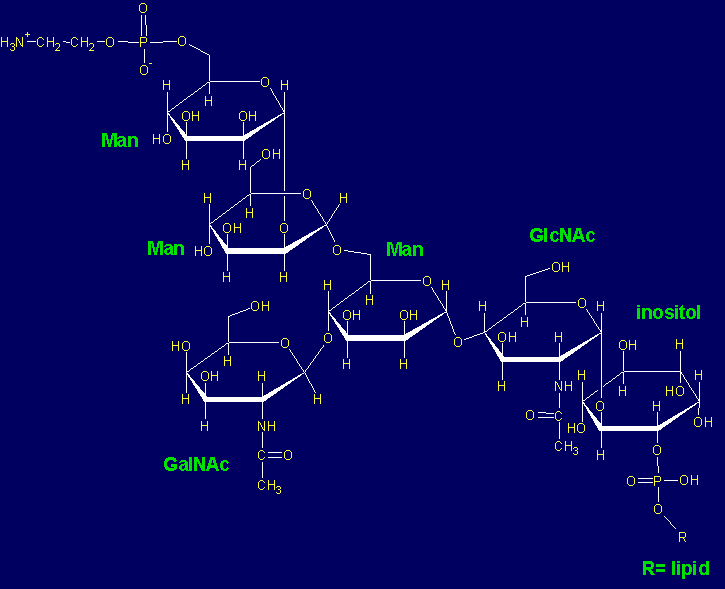

.
.
Unless a note is made in this textbox that the content for this document is complete and in final form, please continually check back and refresh this document (press key F5) to look for any updated/added/edited content.
References
- Toxoplasma gondii: The Model Apicomplexan: Perspectives and Methods, LM Weiss and K Kim, eds., (London: Academic Press), 2007.
Life Cycle
 The image shows that a reservoir such as cats will excrete the unsporulated
oocysts in its feces. These oocysts then make their way into water or
soil or the feed of farm animals (pigs, chickens, sheep, goats are among the
prime examples). Alternatively they might be consumed in contaminated food or
water (particularly in areas of the world where hygeine does not conform to
certain standards). Tissue cysts then form with the body (muscle,
intestine). These then transform into tachyzooites, which can infect the
placenta and the fetus, where prenatal abortion or at least severe developmental
abnormalities can occur. It is for this reason that Toxoplasma screening
of pregnant females is a high priority in medical diagnostics and prevention of
The image shows that a reservoir such as cats will excrete the unsporulated
oocysts in its feces. These oocysts then make their way into water or
soil or the feed of farm animals (pigs, chickens, sheep, goats are among the
prime examples). Alternatively they might be consumed in contaminated food or
water (particularly in areas of the world where hygeine does not conform to
certain standards). Tissue cysts then form with the body (muscle,
intestine). These then transform into tachyzooites, which can infect the
placenta and the fetus, where prenatal abortion or at least severe developmental
abnormalities can occur. It is for this reason that Toxoplasma screening
of pregnant females is a high priority in medical diagnostics and prevention of
Tachyzoites
Also called trophozoite, which is proliferative form, and endozoite, the feeding form. This form occurs in intermediate hosts.
This form is the most extensively studied of all forms of T. gondii.
Cells are crescent-shaped, about 2 × 7 µm, with a slightly pointed
anterior end (anterior
means the direction of motility). Subcellular
components include visible by electron microscopy include:
- Unique cytoskeleton:
- subpellicular microtubules: two polar rings encircling top of resting conoid; outer ring composed of dense matter covering anterior rim of inner membrane complex (IMC); inner ring anchors 22 subpellicular microtubules extending underneath IMC for two-thirds of the body length; the microtubules are 22 nm diameter hollow tubes making up 13 protofilaments of tubulin
- conoid: hollow, truncated cone composed of fiber wound into spiral (like compressed spring), 400 nm dia at base, and 250 nm high. Composed of tubulin, but consisting of asymmetrical filaments of about 9 protofilaments not at all like typical microtubules;
- Secretory organelles:
- rhoptries: a group of club-shaped organelles extending from conoid to nucleus, with a long narrow neck up to 2.5 µm and sac-like body about 0.25 × 1 µm in posterior. Electron-dense in the long part but not so much in the sac.
- micronemes: small rod-shaped (250 × 50 nm) located in apical area behind conoid and homogenously electron-dense.
- dense granules: found throughout cell but mostly in posterior, these are spherical (300 nm dia.) with electron-dense contents
- Endosymbiontic-derived organelles
- mitochondrion: A single branched and elongated mitochondrion is observed, with typical apicocomplexan structure and bulbous cristae.
- apicoplast: anterior to Golgi, it is layered with multiple membranes, it is a plastid-like structure; uniform in shape with 500 nm diameter during infectious stage, it contains granular and filamentous content with observable ribosomes. It has 4 membranes and is theorized to be derived secondary phagocytosis of alga by an endosymbiont.
- universal eukaryotic components
- nucleus: takes a central or basal (posterior) location which depends on stage of infection/invasion; features a centered nucleolus and small clumps of heterochromatin in nucleoplasm; nuclear envelope has multiple pores, and except there it contacts Golgi on its flattened side, it is studded with ribosomes on outer membrane; the nuclear envelope is contiguous with rough ER that is in cytoplasm; on upper surface are layer of clear 70 nm vesicles that appear to bud from nuclear envelope and these are topped (enclosed?) by 3-4 Golgi cisternae
- endoplasmic reticulum
- Golgi apparatus: located next to the nucleus where the latter loses its spherical shape and is somewhat flattened
- acidocalcisomes: ~200 nm dia vesicles containing one or more electron-dense droplets or crystals against a clear background; found near nucleus or posterior; the dark contents are thought to be calcium bound to pyrophosphate and polyphosphates.
- pellicle: a membrane closure for the whole organism, this consists of outer unit membrane (plasmalemma), and inner layer of two closely formed unit membranes which are about 15 nm from the plasmalemma. The IMC derives from ER-Golgi vesicles which flatten and then fuse to form a plate. At the anterior, the inner layer has circular apertures through which conoid protrues; apertures also are found at posterior end. Freeze-fracture EM reveals IMC has an apical plate (a single truncated cone, about 1 µm high)
- micropore: in apical half of cell just anterior to nucleus, it consists of a circular invagination of plasmalemma through break in IMC, with 115 nm dia. the plasmalemma infolds to form electron-dense collar around invagination; numerous during endopolygeny and gametogony; probably functions as cytostome; parts of it bud off to form vesicles intracellularly and may be like lysosomes (analogously the malarial parasite uses micropore to ingest erythrocyte hemoglobin).
- polysaccharide granules: ovoid structures (major: 250 nm, minor: 180 nm) found in apical and basal cytoplasm with variable electron density; filled with starch that is more plant-like (amylopectin); much more numerous in bradyzoites and sporozoites than tachyzoites and merozoites
Two apical rings at apical tip are on cytoplasmic side of membrane. Composed of electron-dense material. The upper one has a 160 nm and posterior one is 200 nm diameter.
A pair of adjacent intraconoidal microtubules extends for < 1 µm into apical cytoplasm and ends next to apical vesicle of 40 nm, adhering to plasma membrane on which 6 longitudinal rows of rectangular plates attach; triangular plates form end of rows at posterior end. These rows extend straight or twist helically. On both sides of protoplasmic face of IMC are lines of intramembranous particles (IMPs) with 22 lines of higher density (the subpellicular microtubules). IMPs have 32 nm periodicity, spaced 30 nm apart. IMP organization in apical plate different than other plates.
Tachyzoites divide by endodyogeny, whose ultrastructal progression is described. Its ultrastructure was described in 1954. Tachyzoites are destroyed by gastric juice (pepsin, HCl).
Bradyzoites
Also called cystozoites and proposed calling is tissue cysts. This form developes when encysted in tissues of intermediate hosts.
Its ultrastructural features compare to tachyzoites as follows:
- its nucleus is more basally located
- it has more numerous micronemes compared to just the few that tachyzoites have
- the rhoptries number is about the same (5-10) compared to 5-12 for tachyzoites
- its appearance is more
solid
compared to beinglabyrinthine
for tachyzoites - it is numerous in dense granules, same as tachyzoites
- it has more numerous polysaccharide granules, unlike the few in tachyzoites
These exist within a wall that stains densely with silver, and have a terminal nucleus. The bradyzoites stain positive with periodic acid-Schiff (PAS), and enclosed in a thin wall that is PAS-negative.
The cyst wall is sensitive to pepsin and trypsin, however the contained cystic organisms resist gastric juice (pepsin + HCl).
When tachyzoites are given to mice, tissue cysts form within 3 days. Cats will shed oocysts within 3-10 days if they ingest tissue cysts or bradyzoites, but will not do so until 18 days or more if they ingest tachyzoites or oocysts. This is likely because of the developmental phase between tachyzoite and bradyzoite to form occysts.
Merozoites
Like tachyzoites, this is a proliferative form, but within the definitive host.
Its ultrastructural features compare to tachyzoites as follows:
- Nucleus is centered just as in tachyzoite, and it has few micronemes
- The rhoptries count is far less, 3-5, compared to tachyzoite
- Its appearance is more
solid
compared tolabyrinthine
for tachyzoites - it has very few dense granules compared to zoites in intermediate hosts
- polysaccharide granules are absent
Sporozoites
Like bradyzoites, this is a somewhat dormant form created for transmission to new members of definitive hosts.
Its ultrastructural features compare to other zoites as follows:
- Nucleus is basal as in counterpart bradyzoites, and it has numerous micronemes as in bradyzoites, compared to few in tachyzoite
- Rhoptries count is same for the zoites in intermediate host
- Its appearance is more
solid
compared tolabyrinthine
for tachyzoites - it has numerous dense granules and polysaccharide granules, just as in bradyzoite
Sexual and Asexual Stages
Frenkel and co-workers in the early 1970s described five asexual stages that exist in intestinal epithelium (enteroepithelial asexual stages). These are designated A through E. These have also been called schizonts. These are distinguished from bradyzoites and tachyzoites. These transformations are between tachyzoite and bradyzoite formation, occurring within 3 days (about 66 hours) after ingestion of tissue cysts.
Schizonts are enteroepithelial asexual stages existing briefly (see next section).
Gamonts are sexual stages. Sporozoites are effectively sporulating forms of oocysts.
Endodyogeny
This process occurs in tachyzoites and bradyzoites in the intermediate host. Different processes are described in merozoites (in definitive host) and in oocysts (sporozoite formation).
Much of what is known about mitosis in apicomplexans is from other members of the group, and not T. gondii. Some unique features include retention of intact nuclear membrane. Coccidian centrioles of 150 nm diameter are composed of 9 short (100 nm) tubules centered on central tubule. The centrosomes, or spindle pole bodies, consist of parallel-oriented centrioles, and are found associated with centrocones or mitotic spindle poles on apical side of nucleus (usually).
At earliest stage a transnuclear funnel forms with fibrous material, developing into invagination of nuclear envelope opened on both sides towards cytoplasm. The mitotic spindle likely polymerizes in the funnel. The funnel opens in the nucleoplasm in its middle part. The poles give rise to centrocones: these are subspherical invaginations of nuclear envelope at start, opened toward centrosomes and through which spindle microtubules extend. This intranuclear spindle is short, and transient (and thus is not able to be well characterized): kinetochores probably separate immediately after funnel opening and assemble on nucleoplasm side of centrocones.
Soon after centrosome separation and centrocone formation, adjacent to each centrosome is a developing structure which are apical complex for each daughter tachyzoite. A bent fiber originating between the pair of centrioles and joining an area where conoid is being assembled appears. An IMC and subpellicular microtubules form around the conoid, then grow posteriorly in coordinated fashion. There is no association with the plasmalemma but appears to occur entirely within cytoplasm (classical schizogony as happens in most Apicomplexa). The Golgi also divides in association with with the spindle formation, each new body on the upper nuclear envelope near each centrocone. Other organelles (rhoptries) also proliferate and assemble.
This mitotic division occurs with the PV, and daughters remain connected at the posterior end. Additional rounds of division occur in which connected daughter assume a rosette pattern.
Biochemistry & Metabolism
In belonging to Apicomplexa, T. gondii is an obligate intracellular parasite of eukaryotic cells. Because the biochemical pathways of host cells are supportive, it can be difficult to understand what pathways exist inside the parasite and which exist outside of it. With completion of a genomic sequence database, it is possible to clone individual enzymes and characterize them.
Carbohydrate Metabolism
The presence of amylopectin as a storage polysaccharide reveals the closeness or even origin of T. gondii from photosynthetic microorganism (blue algae, algae). The apicoplastid organelle serves as additional evidence. Plants will storage polysaccharide as branched amylopectin outside the chloroplast, while inside that organelle there is amylose. Encysted bradyzoite and sporozoites of T. gondii, Eimeria, and Cryptosporidium accumulate amylopectin, a linear glucose polymer not found in Plasmodium and Babesia. The loss of the ability to produce amylopectin in Eimeria sporozoites is attributed to its inability to infect mice. Bradyzoites of T gondii accumulate large amylopectin granules and numerous micronemes, while tachyzoites have no amylopectin and fewer micronemes. It is likely the amylopectin is consumed when encysted and dormant bradyzoites develop into tachyzoites.
Bioinformatics analysis shows several candidate genes having enzyme function likely to be involved in amylopectin metabolism. Synthetic enzymes include
- amylopectin synthase (utilizes UDP-glucose)
- branching enzymes
- UPD-Glc pyrophosphorylase
- isoamylase
- indirect debranching enzyme
- α1→4-glucotransferase
- glycogenin
Enzymes involved in catabolic degradation include
- α-amylase
- dikinase or R1 protein
- phosphorylase
- α-glucosidase
 This complement is similar to that in unicellular green alge Chlamydomonas
reinhardtii. These genes are present in single copies, which defies a tenet
that multiple copies are required for redundancy for crystalline starch
synthesis. A comparative genomic analysis against red alga Cyanidioschyzon
merolae, green alga C. reinhardtii, yeast S. cerevisiae, and
bacterium E. coli showed that T gondii and C merolae have
UDP-Glc-utilizing glycogen/starch synthase-like sequences and glycogenins, and
these are specific for a eukaryotic UDP-Glc pathway. UDP-Glc-dependent glycogen
synthase is present in extracts, while Chlamydomonas lysates have ADP-Glc
dependent activity. There is also an indirect debranching enzyme which has
bifunctional activity: α-1,4-glucotransferase and amylo-1,6-glucosidase,
also present in fungi and animals.
This complement is similar to that in unicellular green alge Chlamydomonas
reinhardtii. These genes are present in single copies, which defies a tenet
that multiple copies are required for redundancy for crystalline starch
synthesis. A comparative genomic analysis against red alga Cyanidioschyzon
merolae, green alga C. reinhardtii, yeast S. cerevisiae, and
bacterium E. coli showed that T gondii and C merolae have
UDP-Glc-utilizing glycogen/starch synthase-like sequences and glycogenins, and
these are specific for a eukaryotic UDP-Glc pathway. UDP-Glc-dependent glycogen
synthase is present in extracts, while Chlamydomonas lysates have ADP-Glc
dependent activity. There is also an indirect debranching enzyme which has
bifunctional activity: α-1,4-glucotransferase and amylo-1,6-glucosidase,
also present in fungi and animals.
Thus a combination of plant- and animal-like metabolisms may be involved in amylopectin biosynthesis. The apicoplast could signify the presence of secondary endosymbiosis via engulfment of unicellular alga. Amylopectin synthase shows strongest similarity to red alga starch synthesis systems. Presence of water dikinase (called R1 protein), α1→4-glucotransferase (D-enzyme) and isoamylase are plant/green algae enzyme functions.
Stage-Specific Expression in Glucose Metabolism
Using RT-PCR, transcripts of R1, α-glucan phosphorylase, α-glucosidase, and α-amylase, that is all catabolic enzymes, are found at hlgh levels in bradyzoites. Biosynthesis components, namely glycogenin, amylopectin synthase, branching enzyme, are found at high levels in tachyzoites but low levels in bradyzoites. This suggests that tachyzoite→bradyzoite differentiation requires amylopectin synthesis but mobilization of amylopectin is done during bradyzoite→tachyzoite conversion. Additional experiments using antibodies to specific proteins are required to establish that the transcripts are not merely dormant.
Glycolysis. Lactate dehydrogenase (LDH) exists in two forms: LDH1 is expressed in tachyzoites while LDH2 is seen in bradyzoites. LDH1 mRNA is present in both bradyzoites and tachyzoites, while LDH2 is only found in bradyzoites. Both isoforms have different pI values, which allows them to be separated electrophoretically. LDH1 and LDH2 also contains a 5-amino acid insertion in the substrate sepcificy loop of the enzyme, a feature it shares with Plasmodium falciparum (pLDH). The LDH2 and pLDH sequence are identical (KSDKE; LDH1 sequence is KPDSE). Various substrate testing shows that T gondii LDH1 and LDH2 have broader substratte specificity: 3-phenylpyrvate is even better than pyruvate in competitive assays. 3-acetylpyridine adenine dincleotide (APAD) is a conveniennt NAD substitute. Gossypol and its derivatives are effective at inhibiting LDH1, LDH2 and pLDH (LDH2 has slightly higher sensitivity). This is often exploited in inhibiting tachyzoite growth in fibroblast cultures. Knockdown studies show that tachyzoites and bradyzoites have variable growth rates, and tissue cysts could not form in infected mice. LDH is critical to cell cycle and differentiation.
LDH1 apoenzyme and LDH1-NAD+ and LDH1-APAD with either the sulfate or oxalate (which is inhibitory) have been (co-)crystallized and x-ray structures obtained. Sequences in the active site differ between LDH1 and human musscle- and heart-specific LDH isoforms, in which LDH1 has more hydrophobic residues. This difference could be used to develop anti-Toxoplasma drugs that target its LDH without poisoning human enzymes, for individuals with chronic infections due to being immunocompromised.
The glucose-6-phosphate isomerase (Glc6P-I) which catalyzes Glc6P to Frc6P is stage-specific also. RT-PCR shows that a Glc6P-I transcript is present in bradyzoites whereas only a small amount is present in tachyzoites. Western analysis with anti-Glc6P-I pAb shows enzyme only in encysted bradyzoites. Other isoforms of enzyme have been revealed in T gondii searches, but function is not established.
ENO (2-phospho-D-glycerate hydrolase) converts 2-phosphoglycerate to phosphoenolpyruvate. −OOC-C(OPO3H)-CH2OH → −OOC-C(OPO3H)=CH2. Two stage-specific isozymes are also described. ENO1 and ENO2 are found on the same chromosome, separated by 1.6 kbp. Amino acid identity is about 73%. Comparison of parasite to mammalian ENO sequences shows 5-amino acid insertion in ENO1 (EWGWS) and ENO2 (EWGYC, also found in Plasmodium enolase). A dipeptide insertion (EK for ENO1 and DK for ENO2) is also found. The human and ENO1 and ENO2 3D structures show perfect alignments except for the insertions mentioned. Alteration of the structure to delete EK in ENO1 shows that there is no effect on Km, while removing both loops increases Km 13-fold. Deleting EWGWC pentapeptide increases Km by 5-fold. Recombinant ENO2 has a 3-fold higher Vmax compared to ENO1. Temperature studies reveal that ENO2 (tachyzoite-specific) is more thermolabile.
Interestingly many carbohydrate metabolic enzymes provide other functions. LDH crystallizes to affect vision in ducks and crocodiles; α-enolase crystallizes in lamprey and turtles; and arginosuccinate lyase does for birds and reptiles. GAPDH interacts with rRNA, tRNA, hammerhead ribozymes, and the 3'-UTR of mRNA species: it might regulate helicase; tRNA and mRNA export; RNA unfolding; translation regulation; viral gene expression regulation; and mRNA stability. The N-terminal GAPDH domain mediates GTPase Rab2-dependent recruitment to membranes in Plasmodium.
Interaction proteomics studies shows that aldolase binds to micronemal thrombospondin-anonymous related proteins (TRAP family) and the acto-myosin motor in parasite gliding and host-cell invasion. Parafusin-related protein 1 (PRP1) is ortholog of phosphoglucomutase that associates with micronemes.
Immunocytochemistry for ENO1 and ENO2 show localization in the nucleus, both for bradyzoites and tachyzoites, but only actively dividing zoites. These signals appear earlier than surface markers like P36 or SAG4 in bradyzoites. Tachyzoite-specific ENO2 is expressed only in dividing sexual forms of T gondii taken from infected cat tissues. Nuclear localization of ENO in human cells was reported with association to c-Myc promoter and it is a transcription repressor in cancer cells. Why does enolase have a DNA-binding domain?
Glycolipid Anchors
Many membrane-bound proteins bound to the membrane via an inositol-containing glcyophospholipid (GPI). Many well known surface proteins attach via GPI anchors, and this is more common in Toxoplasma and protozoa than higher eukaryotes. In understanding the genesis of these GPI-bound proteins, metabolic labeling (with [3H]Glc-NH2, Man, Gal, palmitic and myristic acids, and inositol) and study of phosphatidylinositol phospholipase C (PI-PLC) have been done. In addition, an anti-crossreacting determinant (CRD) produced against trypanosomes and with soluble surface proteins of live parasites reveals that proteins are connected by GPI anchors.
 The evolutionarily conserved GPI core is ethanolamine-PO4-6Man(α1→2)Man(α1→6)Man(α1→4)GlcNAc(α1→6)-inositol-1-phospholipid for SAG1 (P30) and P23. Four major glycolipids and intermediate forms have been characterized. It has been shown that the GPIs (free, not bound to protein) are immunogenic themselves, as a 4.6 kDa antigen was found to be a free GPI reacting to early IgM. GPI structures have been determind by metabolic labeling and enzymatic digestion, chromatography, NMR, and FAB-MS. Function of GPI are not fully known, although free and protein-bound may be involved in infection. They elicit a strong inflammatory response, and maybe an endotoxin.
Nucleotide Biosynthesis
Nucleotide biosynthetic pathways are fairly well detailed since they are potential targets for drug therapy. T gondii has both de novo and salvage pathways for pyrimidines (thymidine, cytosine). The de novo pathways are more important since they are vital for growth, not just survival. Mutants auxotrophic for pyrimidines involving knockouts of the carbamly phosphate synthetase II gene (CPSII) are not virulent in mice. Pyrimidine starvation normally causes tachyzoite→bradyzoite induction.
Six enzymes characterize the pyrimidine de novo biosynthetic pathway. In mammals the first three enzymes are a multifunctional protein complex (CAD) having three enzymatic functions: CPSII, aspartate carbamyltransferase (ATCcase), and dihydroorotase (DHOase). This complex shows allosterism, being activated by the presence of 5-phosphoribosyl-1-pyrophosphate (PRPP) and being inhibited by UTP (a product). A large 150 residue C-terminal domain is responsible for this regulation.
CPSII in T gondii is not associated with other activities and is a single 540 kDa cytosolic protein. The gene has 36 introns and its 37 exons code for a 1687 residue polypeptide with apparent mass of 186 kDa, indicating that the native configuration is probably a homotrimer. Bacteria and plants similarly have enzymes with CPS activities with no associated downstream activities. CPSII is inhibited by UTP in T gondii but is not activated by PRPP. While there is a large C-terminal domain, it does not appear to function with the regulation in mammals.
A bifunctional Gln-dependent CPSII is also present. This incorporates a Gln amidotransferase in the N-terminus fused with CPS in the C-terminus. This is present in many protozoal parasites. In bacteria and plants, these activities are not fused.
ATCase activity in T gondii is in a 140 kDa monofunctional cytosolic enzyme. The cloned orf of ATCase cDNA from T gondii encodes a 423 amino acid polypeptide predicted to be 46.8 kDa. Recombinant possessing this activity has a molecular mass of 144 kDa, and so this too is likely a homotrimer. Plant ATCase is inhibited by UMP, and E coli ATCase by CTP and UTP. T gondii ATCase does not seem to be inhibited by any product.
The DOHase activity in the parasite seems to be found in a monofunctionaly cytosolic enzyme of 70 kDa, also with no regulation. The gene has not been characterized.
The 4th enzyme is dihydroorotate dehydrogenase. These come in two families. Family-1 enzymes in some bacteria and lower eukaryotes are cytosolic while family-2 are membrane-associated with the mitochondrial respiratory chain. Given that DHO-DHase is recovered in particulate fractions of tachyzoite extract and inhibited by respiratory chain inhbitors, and the cloned cDNA (with predicated polypeptide mass of 65 kDa) is similar to family-2 enzymes, then DHO-DHase is likely family-2.
Enzyme #5 is orotate phosphoribosyltransferase (OPRTase) and the last is orotidylate decarboxylase (ODCase). These are cytosolic and co-sediment in sucrose gradients at about 70 kDa. In higher eukaryotes the activities are fused in a polypeptide. In Plasmodium they are part of heterodimer with 33 kDa OPRTase and 38 kDa ODCase, but in T gondii it is not clear.
For the pyrimidine salvage pathway, there are five enzyme activities:
- cytidine deaminase
- deoxycytidine deaminase
- uridine phosphorylase
- deoxyuridine phosphorylase
- uracil phosphoribosyltransfer (UPRTase)
All salvage comes through uracil and brought to nucleotide level by UPRTase. UPRTase deficiency does not affect growth, so the pathway is not vital for tachyzoites.
However the enzyme might be a therapeutic target nonetheless. The enzyme recognizes only uracil. It is a 27 kDa homodimer when no substrate or GTP activator is present, but forms an active tetramer stabilized by GTP binding.
Purine salvage pathway. T gondii and other parasitic protozoa and intracellular pathogens cannot synthesize purines de novo. Instead there is a purine salvage pathway. Formation of hypoxanthine (H), xanthine (X), or guanine (G) can lead to their phosphorylation by the broadly specific phosphoribosyltransferase HXGPRTase. Adenosine is phosphorylated by an adenosine kinase (AK). Other enzymes involved in the salvage pathway include adenine deaminase (adenine → hypoxanthine), guanosine phosphorylase (guanosine → guanine), adenosine deaminase (adenosine → inosine, note this is not adenine deaminase), and inosine phosphorylase (inosine → hypoxanthine). AK and HXGPRT have had crystal structure done and neither enzyme is required for T. gondii to survive, although a double knockout mutant of both is lethal, indicating it can depend on one of the two. Other parasites actually have only one of the two enzymes, not both. AK is a 39.3 kDa monomer with < 30% identity with AKs in other organisms. HXGPRT is present as two isoenzymes which result from differentially spliced mRNA products. Isozyme I is a homotetramer with 26.4 kDa subunits, and isozyme II has an extra 49 aa inserted 7 aa downstream from N-terminus. Isozyme I is cytosolic, while isozyme II localizes to tachyzoite inner membrane complex as the 49 aa sequence has a membrane targeting signal. When coexpressed in E coli as recombinants or in vivo in tachyzoites, they will form heterotetramers, and at least two isozyme II subunits in a multimer are needed for membrane association. Strangely there are no differences in kinetic properties, so there must be other reasons.
Nucleoside Triphosphate Hydrolase (NTPase). This enzyme was reported nearly 30 years ago and has substrate specificity and divalent cation requirements similar to E(ecto)-type ATPases. The latter NTPases are ubiquitous in eukaryotic cells and also in parasitic protozoans. The NTPase in T gondii is abundantly present in the tachyzoite, as much as 2-8% of the total tachyzoite protein, whereas the E-ATPases are normally very low abundance, so low that a purification would not be visible on gels. The enzyme is dormant under ordinary conditions: dithiols are essential to activate it, whereas no such mechanism has been identified for E-ATPases. When activated however, the ATP hydrolysis activity it 5000 times that of any other cell. The enzyme may not function within the tachyzoite at all, in fact: the tachyzoite secretes the enzyme from the dense granule (the secretory organelle of the tachyzoite) which goes into the intravacuolar space of the host cell and forms a membrane-associated insoluble enzyme. E-type ATPases are not so secreted (including in protozoan parasites).
Type I strains of T gondii are very virulent in mouse host and they possess two NTPase isoforms. NTPase-I prefers NTPs while NTPase-II works on both NTPs and NDPs. Both isoforms differ by 16 out of 628 amino acids based on cDNA sequence analysis. With native masses of 260 kDa, this suggests a homotetrameric form with 67 kDa subunit. The cDNA sequence suggests a 25-aa hydrophobic secretion signal missing in the mature form, in which the signal places the product in the dense granule; other proteins in the dense granule have similar sequences. The isozyme NTPase-II form hydrolyzes both NTP and NDP at about the same rate, similar to apyrase (EC 3.6.1.5) enzymes in other systems (potato, Schistosoma mansoni).
What role does this NTPase play? As protozoans are purine auxotrophs, these NTPases are likely involved in salvage of purines from host cell. It hydrolyzes ATP to ADP and to AMP. But purines are salvaged through AK or HXGPRTase, which do not use AMP or ADP. Tachyzoites have no ecto-5′-nucleotidase that would cause AMP → adenosine for the AK activity. So it is doubtful that purine salvage is the reason. When exposed to DTT, non-motile intravacuolar tachyzoites show egress within 60 s if there is concurrent Ca2+ flux, which appears to happen when the generally oxidized inactive form is transformed in this way. What is the physiological means since DTT is not normally found in nature? As thioredoxin is the most abundant dithiol, the reduced form was found to activate the enzyme, while the oxidized form deactivated it. Glutathione had no effect, although glutathione promoters activate Ca2+ flux and they decrease ATP in tachyzoite-infected fibroblasts. Glutaredoxin is a small protein with active center disulfide; and it is this prortein in the vacuole (where thioredoxin cannot enter) which may be reduced by glutathione and which activates the NTPase. Tachyzoites may also release glutaredoxin in order to control their own egress. Attempts to disrupt the gene have not been successful and use of antisense depletion indicate the NTPase is required for parasite replication.
Genomics
Pfefferkorn in the 1970s advanced studies on gene manipulation and parasite culture.
The EUPathDB keeps a database and information site as a genomics resource, aggregating information from other databases and news sources.
Here is the NCBI genome page on Toxoplasma: Genome project on T. gondii.
Transient Transfection of Toxoplasma
The typical technique of introducing genetic material is by electroporation of tachyzoites. The eletroporation buffer is constructed to resemble cytosol (cytomix). The RH strain (type I, virulent) and cyst-forming straisn (ME49 and Prugniaud, type II) have been used, with slight modifications. Cyst-formers are more difficult.
Transfection efficiency is monitored with reporters: chloramphenicol acetyl transferase (CAT), β-galactosidase, β-lactamase, alkaline phosphatase, firefly luciferase (LUC). Note that β-lactamase and ALP have no activity in the parasite (inhibitors) and instead might be used to study secretory pathways. LacZ is detected with CPRG (yellow → red color; check λ = 570 nm) and useful in multiwell screenings. Reporter gene expression depends on 5' and 3' sequences in T. gondii. Different vectors exist with difference in promoter strength and specificity of parasite stage.
Alterations of expression levels of Toxoplasma proteins can reveal mechanisms and aspects of biology: overexpression of microneme proteins result in accumulation in early compartment of secretory pathway, or leakiness of parasitophorous vacuole.
Constitutive expression. For inserts to be turned on continuously, vectors derived from α-tubulin (TUB1), dihydrofolate reductase (DHFR), rhoptry protein 1 (ROP1), microneme protein 2 (MIC2), many dense-granule proteins (GRAx), and hypoxanthine-guanine phosphoribosyltransferase (HXGPRT). GRAx and MIC2 are strong promoters, TUB1 and ROP1 are intermediate, and DHFR-TS is weak.
Stage-specific promoters are all upstream (5'), with no elements related to stage in the 3'-UTR. Vectors derived from SAG1 (surface antigen 1), ENO (enolase), and lactate dehydrogenase 1 (LDH1) are specific for tachyzoites. Bradyzoite vectors have bradyzoite antigen 1 (BAG1), enolase 2 (ENO2), and SAG4.
The 3'-UTR of the mRNA contains important elements for transcription, which drops to < 10% of normal if not present. Kozak sequences are present at the start codon for translation initiation: gNCAAaATGg is similar but not identical to Kozak sequence. Transgenes like GFP require extra amino acids at the N-terminal to obtain expression (N-end rule): amino acids such as A, D, and E after initiator Met confer high expression level.
Stable Transformation of Positive & Negative Selectable Markers
Because T gondii is obligate intracellular parasite, the ability to select transformants is more limited than for other organisms, since drugs must not be toxic to the host cell as well. Chloramphenicol is toxic to T gondii, so CAT transfection can be used both as a reporter and to select for successfully transformed targets, although three cycles of host cell lysis (about 7 days) are necessary to observe the effect. Then selection in multiwell plates for a period of 5 days can be used.
Phleomycin works by breaking DNA and the ble gene from Streptoalloteichus or Tn5 can be used for selection as well. But the selection is applied to extracellular parasites.
Selection by Trp auxotrophy can be obtained by complementation with indole added to medium and presence of bacterial Trp synthase (trpB).
Uracil phosphosribosyl transferase (UPRT) is sensitive to a prodrug 5'-fluo-2'-deoxyuridine (FUDR). Hypoxanthine-xanthine-guanine phosphoribosyl transferase (HXGPRT) also converts 6-thioxanthine (6-Tx) into an inhibitor of GMP synthase. When HXGPRT is absent, the drug mycophenolic acid can kill parasites.
The table below shows various protocols used for transformation.